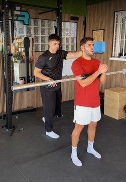
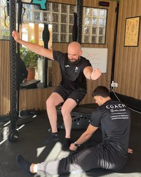
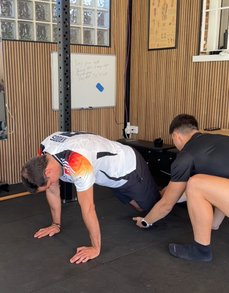

<!DOCTYPE html>
<html lang="es">
<head>
  <meta charset="UTF-8" />
  <meta name="viewport" content="width=device-width, initial-scale=1.0" />
  <meta name="robots" content="noindex" />
  <title>TESTS A REALIZAR TRAS UNA RECONSTRUCCIÓN DE LCA | EVOREHAB</title>
  <!-- vista-previa -->
  <link rel="icon" href="/favicon.ico" sizes="any" />
  <link rel="icon" type="image/png" href="/assets/icono.png" />
  <link rel="apple-touch-icon" href="/assets/icono-apple.png" />
  <meta property="og:type" content="website" />
  <meta property="og:site_name" content="EVOREHAB" />
  <meta property="og:title" content="TESTS A REALIZAR TRAS UNA RECONSTRUCCIÓN DE LCA | EVOREHAB" />
  <meta property="og:description" content="TESTS A REALIZAR TRAS UNA RECONSTRUCCIÓN DE LCA" />
  <meta property="og:url" content="https://edurehab.onrender.com/lm12-tests-lca/" />
  <meta property="og:image" content="https://edurehab.onrender.com/og/lm12-tests-lca.jpg" />
  <meta property="og:image:width" content="1200" />
  <meta property="og:image:height" content="630" />
  <meta name="twitter:card" content="summary_large_image" />
  <!-- /vista-previa -->
  <meta name="description" content="TESTS A REALIZAR TRAS UNA RECONSTRUCCIÓN DE LCA" />

  <link rel="preconnect" href="https://fonts.googleapis.com" />
  <link rel="preconnect" href="https://fonts.gstatic.com" crossorigin />
  <link href="https://fonts.googleapis.com/css2?family=Barlow+Condensed:wght@700;800&family=Plus+Jakarta+Sans:ital,wght@0,400;0,500;0,600;0,700;0,800;1,700;1,800&display=swap" rel="stylesheet" />
  <link rel="stylesheet" href="../landing.css?v=6" />
  <link rel="stylesheet" href="../lm.css?v=35" />
  <link rel="stylesheet" href="../cookies.css?v=1" />
</head>
<body>

<header>
  <div class="wrap">
    <span class="logo"></span>
  </div>
</header>

<section class="lm-hero">
  <div class="wrap">
    <span class="kicker">Guía de tests</span>
    <h1 class="lm-largo" style="margin-top:18px">TESTS A REALIZAR TRAS UNA <span class="cy">RECONSTRUCCIÓN DE LCA</span></h1>
    <p class="lm-sub">Por qué, cuáles y cuándo</p>
    <div class="lm-yo">
      <div class="lm-yo-fotos" aria-hidden="true">
        <span class="lm-ring r1"></span>
        <span class="lm-ring r2"></span>
        <span class="lm-ring r3"></span>
      </div>
      <div class="lm-yo-txt">
        <b>Eduardo Estévez</b>
        <span class="lm-yo-user">@edu.rehab</span>
        <p>Especialista en readaptación de lesiones de rodilla</p>
        <ul>
          <li>Ciencias de la A.F. y el deporte · UAH</li>
          <li>Experto universitario PT · Uni. LaSalle</li>
          <li>Múltiples formaciones de referentes del sector</li>
        </ul>
      </div>
    </div>
  </div>
</section>

<section class="lm-sec">
  <div class="wrap">
    <div class="lm-doc">
<h2 class="lm-h2d"><strong>¿POR QUÉ REALIZARLOS?</strong></h2>
<p>Muy simple → “Lo que no se mide, no se puede mejorar” A ver, técnicamente esto no es del todo cierto. Sí se puede mejorar, pero sabes cuánto lo estás mejorando, o si estás avanzando al ritmo que en teoría se debería.</p>
<p>A menudo se plantea si las pruebas tras una reconstrucción de LCA buscan predecir una nueva lesión o valorar si el deportista está listo para volver. Aunque algunas pruebas funcionales se relacionan con mayor riesgo de recaída, predecir lesiones con precisión sigue siendo muy difícil.</p>
<p>La evidencia científica es contradictoria en cuanto a si pasar una batería de tests reduce realmente las nuevas lesiones del LCA. Además, cada parte implicada (deportistas, entrenadores, médicos) define el “éxito” de forma distinta: volver rápido, rendir como antes o evitar recaídas.</p>
<p>Aunque las segundas lesiones del LCA afectan al 10-20% de los casos, algunas de ellas son por contacto (como golpes directos), lo que no puede prevenirse ni evaluarse con ningún test funcional. Por tanto, la cantidad real de lesiones evitables es mucho menor de lo que parece.</p>
<h3 class="lm-h3d"><strong>Lesiones secundarias y asociadas a la cirugía de LCA</strong></h3>
<p>Menos del 50% de los deportistas con una lesión de LCA vuelven a competir al mismo nivel 3 años después de "recuperarse". ¿Por qué?</p>
<p>En muchos casos, no es solo por una segunda rotura del LCA, sino por un cúmulo de lesiones que solemos pasar por alto.</p>
<p>Tras una reconstrucción, más de la mitad de los atletas sufren otras lesiones al intentar volver al deporte:</p>
<ul class="lm-lista"><li>A corto plazo: roturas musculares, sobrecargas</li><li>A largo plazo: lesiones meniscales, condropatías, artrosis</li></ul>
<p>Centrarse solo en prevenir una nueva lesión del LCA es quedarse corto.</p>
<p>La verdadera prevención está en detectar y abordar todo lo que pueda frenar la vuelta al deporte, no solo el ligamento operado.</p>
<h3 class="lm-h3d"><strong>La importancia de testear y evaluar de forma periódica</strong></h3>
<p>Durante el proceso de readaptación tras una reconstrucción de LCA, no basta con “sentirse bien” o “tener menos dolor”.</p>
<p>Es imprescindible medir, evaluar y hacer seguimiento de las posibles limitaciones físicas y psicológicas que aún pueden estar presentes, y hacerlo de forma periódica una vez cada ciertas semanas o meses.</p>
<p>Estas limitaciones pueden aparecer en varias áreas: Fuerza muscular, movilidad articular, laxitud de la rodilla, capacidad funcional y rendimiento, preparación mental para volver al deporte.</p>
<p>Si queremos ser precisos, necesitamos tests sensibles, fiables y repetibles, que nos permitan tomar decisiones objetivas y hacer un seguimiento real de la evolución del deportista.</p>
<h3 class="lm-h3d"><strong>¿Volver sí, pero al mismo nivel?</strong></h3>
<p>Una cosa es volver al deporte… y otra muy distinta, volver a rendir como antes.</p>
<p>Según datos de la UEFA, aunque el 87 % de los futbolistas profesionales siguen jugando 3 años después de una lesión de LCA, solo el 65 % recupera su nivel previo de rendimiento. Esto nos dice algo importante: Nuestros métodos actuales no están siendo suficientes. Y en parte, es porque muy pocos protocolos incorporan métricas reales de rendimiento en el momento de volver al deporte.</p>
<h3 class="lm-h3d"><strong>¿Qué queremos evaluar realmente?</strong></h3>
<p>Desde la experiencia clínica y lo observado en deportistas reales, hemos diseñado una batería de pruebas funcionales completa, que no solo mide si puedes “volver a jugar”, sino si estás preparado para rendir al máximo nivel sin asumir riesgos innecesarios.</p>
<p>Esta batería evalúa de forma integral las capacidades clave que influyen en:</p>
<ul class="lm-lista"><li>La prevención secundaria</li><li>El rendimiento deportivo</li><li>La toma de decisiones sobre el retorno</li></ul>
<p>Lo verás más adelante cuando lo expliquemos.</p>
<h2 class="lm-h2d"><strong>CUÁLES Y CÓMO REALIZARLOS</strong></h2>
<p><em>Primero siempre el lado NO afectado y luego comparar con el afectado. </em></p>
<p><strong>Para evaluar el ROM: </strong></p>
<ul class="lm-lista"><li>Flexión: Goniómetro universal</li><li>Extensión: Inclinómetro</li></ul>
<p>Siendo realistas, ni tú ni yo en casa tenemos estos aparatos. Te recomiendo descargarte alguna aplicación en el móvil si quieres hacerlo desde casa. Yo utilizo “Angle Meter”.</p>
<p><strong>Para evaluar la inflamación: </strong></p>
<p>Se puede medir la circunferencia de la rodilla, aunque puede ser poco fiable por deformidades postquirúrgicas. Aun así, es útil para comparar el progreso semanalmente.</p>
<p><strong>Otros parámetros clínicos importantes:</strong></p>
<ul class="lm-lista"><li>El dolor → Escala Visual Analógica (EVA), diferenciando entre dolor en reposo, durante el tratamiento y durante la actividad.</li><li>La percepción subjetiva de función → Cuestionario IKDC (International Knee Documentation Committee).</li><li>La preparación psicológica → ACL-RSI (ACL–Return to Sport after Injury) y la TSK-11 (Tampa Scale of Kinesiofobia)</li></ul>
<h3 class="lm-h3d"><strong>Evaluación de la fuerza tras una reconstrucción del LCA (RLCA)</strong></h3>
<p>Para valorar la fuerza tras una reconstrucción del LCA, en algunos centros se utilizan dinamómetros y pruebas manuales específicas para glúteo, cuádriceps, isquios o sóleo. Aterrizando esto a tierra para que puedas hacerlo tú en el gimnasio, nosotros de forma online también podemos monitorizar la fuerza mediante ejercicios controlados en gimnasio, como extensiones de cuádriceps, curls femorales, hip thrusts o sentadillas, evaluando repeticiones, carga, fatiga y ejecución técnica.</p>
<p>Estos ejercicios nos permiten ver progresos reales y detectar asimetrías o limitaciones relevantes.</p>
<p>Por otra parte, es clave tener en cuenta que el tipo de injerto (como HTH, isquiotibiales o tendón del cuádriceps) puede condicionar el ritmo de recuperación de la fuerza, por lo que adaptamos cada fase a la situación individual.</p>
<h3 class="lm-h3d"><strong>Control motor:</strong></h3>
<p>A las seis semanas tras la operación se evalúa el movimiento mediante: </p>
<ul class="lm-lista"><li>Sentadillas a dos piernas</li><li>Step-up/down</li><li>Sentadillas a una pierna</li></ul>
<p>Pruebas que se repiten a los tres meses para valorar la evolución.</p>
<p>Algunos deportistas profesionales pueden empezar a realizar saltos con contramovimiento (CMJ) y drop jumps (DJ) a los tres meses, pero esto depende de su preparación, confianza y contenido del programa.</p>
<p>Es habitual que en esta fase todavía exista miedo, menor velocidad en el descenso y una tendencia a evitar apoyar con fuerza la pierna operada.</p>
<p>A los 4 o 5 meses deberían ser capaces de realizar saltos en contramovimiento (a una y dos piernas), saltos en caída y una primera prueba de carrera en cinta a 16 km/h durante 10 segundos.</p>
<p>Si se dispone de cinta instrumentada, se pueden recoger datos de fuerza de reacción del suelo (GRF), pero en su defecto, el análisis en vídeo también puede ser útil.</p>
<h3 class="lm-h3d"><strong>Saltos verticales</strong></h3>
<p>En cuanto a los saltos verticales, aportan más información que los saltos horizontales. No tanto por la distancia alcanzada, sino porque permiten evaluar métricas como la altura de salto y el índice de fuerza reactiva (RSI), que son más sensibles para detectar déficits biomecánicos.</p>
<p>Durante un salto vertical, la rodilla, la cadera y el tobillo contribuyen en proporciones similares tanto al impulso como a la fase de despegue.</p>
<p>Aunque no siempre se puede hacer un análisis biomecánico detallado, existen herramientas accesibles como apps móviles, alfombrillas de contacto, plataformas de fuerza o células fotoeléctricas que permiten estimar el RSI, el tiempo de contacto y la altura de salto.</p>
<h3 class="lm-h3d"><strong>Salto horizontal y tareas de cambio de dirección</strong></h3>
<p>El análisis del salto horizontal ofrece información muy valiosa sobre la función de la rodilla, especialmente en la fase de aterrizaje.</p>
<p>Durante esta fase, la rodilla puede asumir hasta el 65 % del trabajo de absorción, lo que convierte esta prueba en una herramienta muy sensible para detectar compensaciones entre piernas y limitaciones funcionales.</p>
<p>Deportistas con injertos HTH o de tendón del cuádriceps suelen mostrar mayores dificultades para absorber la energía correctamente en esta fase, por lo que este tipo de salto debe formar parte esencial del proceso de rehabilitación y testeo post-lesión.</p>
<h3 class="lm-h3d"><strong>Tareas de cambio de dirección</strong></h3>
<p>Además del trabajo en los planos vertical y horizontal, es fundamental evaluar la mecánica de cambio de dirección, especialmente en deportes de pivote.</p>
<p>Incluso a los 9 meses post-RLCA, siguen observándose alteraciones biomecánicas en tareas de corte, aunque los tiempos de ejecución sean similares.</p>
<p>Estas diferencias afectan tanto al plano sagital como al frontal, y se relacionan con un mayor riesgo de recaída, sobre todo en movimientos exigentes como el sprint o los cambios de dirección con carga. Por eso, el protocolo debe incluir pruebas de cambio de dirección tanto planificadas como no planificadas (por ejemplo, giros de 90°).</p>
<h3 class="lm-h3d"><strong>Análisis biomecánico avanzado</strong></h3>
<p>En fases más avanzadas, especialmente dentro de la fase específica de vuelta al deporte, se puede realizar un análisis biomecánico detallado mediante captura de movimiento con marcadores.</p>
<p>Este tipo de evaluación analiza el movimiento en los tres planos, obteniendo datos de ángulos, pares y potencias articulares, así como las contribuciones relativas de cada articulación. Además, proporciona métricas clave de rendimiento y posibles áreas de compensación.</p>
<p>Toda esta información permite al clínico ajustar el plan de rehabilitación de forma individualizada, adaptando la progresión a los déficits concretos y características biomecánicas de cada deportista.</p>
<p>El problema es que en ningún centro que no sea de alto rendimiento (CAR) vas a encontrar esto, por lo que yo no lo tendría muy en cuenta por su falta de accesibilidad.</p>
<h3 class="lm-h3d"><strong>Criterios de alta y retorno al entrenamiento</strong></h3>
<p>Finalizar un protocolo de rehabilitación no significa que el deportista esté listo para competir. Lo que planteamos es una serie de criterios mínimos para que el atleta abandone el entorno clínico y pueda volver a entrenar con su equipo, iniciando así una progresión gradual hacia la competición.</p>
<p>Estos criterios deben adaptarse a cada caso, según el historial y nivel de actividad previo del deportista, y se basan en la combinación de evidencia científica, experiencia clínica y datos normativos.</p>
<p>Es importante tener en cuenta que la decisión de volver a entrenar no es solo médica: intervienen factores psicológicos, sociales y deportivos. Por eso, el proceso debe ser compartido entre profesional y deportista, con una toma de decisiones informada y adaptada al contexto competitivo.</p>
<h3 class="lm-h3d"><strong>¿Es importante la simetría?</strong></h3>
<p>Uno de los grandes objetivos durante la rehabilitación es restablecer la simetría entre extremidades. Las asimetrías de carga podrían aumentar el riesgo de lesiones secundarias y también contribuir a problemas a largo plazo, como lesiones meniscales, condropatías o incluso artrosis precoz (OA).</p>
<p>Aun así, no está del todo claro cuánto tiempo persisten estas asimetrías tras la vuelta al deporte, ni qué impacto exacto tienen.</p>
<p>Por eso, es clave valorar cada métrica de forma individual y conociendo el margen de error de cada prueba. Cuando no se dispone de valores preoperatorios, el objetivo debe ser que ambas piernas alcancen niveles normativos similares, evitando que la no operada compense excesivamente.</p>
<p>Mi recomendación es tratar de estar siempre en <em><strong>menos de un 5% de diferencia.</strong></em></p>
<p>Recuperar la simetría es importante, sí, pero igual de importante es recuperar el nivel previo de rendimiento del deportista.</p>
<h3 class="lm-h3d"><strong>Consejos y recomendaciones clave para las pruebas funcionales</strong></h3>
<p>En pocos centros que no sean de alto rendimiento (CAR) te vas a encontrar tecnología avanzada, por lo que tendrás que tratar de evaluar lo máximo posible con lo que tienes.  Pruebas manuales y tests físicos de fuerza, desplazamiento... nos permiten conocer datos precisos estando al alcance de todos. Te recomiendo que te guíes por ello.</p>
<p>De hecho, nosotros tenemos algunas aplicaciones móviles que ya nos permiten evaluar bastantes cosas. </p>
<p>Las evaluaciones deben integrarse como parte de la rehabilitación, ya que ayudan tanto al deportista como al clínico a tomar decisiones y ajustar el plan de forma precisa.</p>
<p>También es importante estandarizar los test: mismo protocolo, misma persona aplicando la prueba y en el mismo orden. Además, deben evaluarse tareas ya entrenadas por el deportista, ya que pruebas sin familiarización pueden dar resultados poco fiables.</p>
<p>Por último, es ideal contar con una base de datos normativa propia (como tenemos nosotros, por ejemplo) incluyendo métricas de fuerza, salto y rendimiento.</p>
<p>En ausencia de datos individuales previos, se pueden utilizar valores de referencia de la literatura, sabiendo que varían según el deporte, sexo, edad o posición del jugador.</p>
<a class="zoom" href="img-01.jpg" target="_blank" rel="noopener"></a><small class="zoomtip">Toca la imagen para ampliarla</small>
<p>En esta imagen extraída de la <em><strong>guía clínica de rehabilitación</strong></em> de LCA de <em><strong>Aspetar</strong></em> observarás los diferentes tests que deberías ir realizando y cumpliendo conforme avance la rehabilitación. </p>
<p>Como hemos dicho, no es algo que debas tomar a la ligera. Se debe llevar un muy buen control de absolutamente todo el proceso, cumpliendo con los diferentes criterios para poder seguir avanzando de fases.</p>
<h2 class="lm-h2d"><strong>NO TE AGOBIES, ¡HAY SALIDA!</strong></h2>
<p>Aunque ahora mismo no te lo parezca, te puedes recuperar muy bien de una reconstrucción de LCA, tan solo debes hacer lo correcto, como te acabo de explicar. </p>
<p>Esto evidentemente no es algo que te recomiende hacer por tu propia cuenta, ni muchísimo menos.</p>
<p>Tampoco te recomiendo trabajarlo algún readaptador o fisioterapeuta que no se dedique exclusivamente a esta lesión o a otras de la rodilla como menisco, etc. Al final y acabo si lo que quieres es recuperarte haciendo lo mejor, necesitas acudir a un <em><strong>especialista</strong></em>, como podríamos ser nosotros.</p>
<p>Respecto a dónde hacer tus evaluaciones y entrenamientos, lo más recomendable es hacer una readaptación <em><strong>combinando presencial y online</strong></em>, y eso es precisamente lo que hacemos en EVOREHAB, el programa <em><strong>especializado en lesiones de rodilla</strong></em> <em><strong>y rendimiento</strong></em> en el que acompañamos a más de 50-60 deportistas cada mes a recuperarse de esta y otras lesiones.</p>
<p>No solo proporcionamos todos los entrenamientos individualizados 4-6 días a la semana a cada uno de nuestros deportistas, sino que también les hacemos evaluaciones presenciales u online cada 6-8 semanas para asegurarnos de que van cumpliendo con los valores que deben cumplir.</p>
<div class="lm-figs"></div>
<ul class="lm-lista"><li>Si sientes que nadie te está evaluando correctamente. Si sabes que estás mejorando pero no sabes si al ritmo que deberías. Si te encuentras estancado.</li><li>Si nadie te explica el por qué de los los ejercicios que haces...</li></ul>
<div class="lm-cta-a"><p class="t">Estamos deseando ayudarte</p><p class="s">Mándame un mensaje privado diciendo</p><div class="k">“EDU NECESITO AYUDA”</div><p class="s">y analizaremos tu situación actual al detalle para ponerle el punto y final a tu lesión.</p><p class="n">Se abre WhatsApp con el mensaje ya escrito. Solo dale a enviar.</p><a class="btn-wa" href="https://wa.me/34644516082?text=Hola%20Edu%21%20Acabo%20de%20ver%20la%20gu%C3%ADa%20%C2%ABTests%20a%20realizar%20tras%20una%20reconstrucci%C3%B3n%20de%20LCA%C2%BB.%20EDU%20NECESITO%20AYUDA" target="_blank" rel="noopener noreferrer"><svg class="wa-ic" viewBox="0 0 24 24" aria-hidden="true"><path fill="currentColor" d="M17.472 14.382c-.297-.149-1.758-.867-2.03-.967-.273-.099-.471-.148-.67.15-.197.297-.767.966-.94 1.164-.173.199-.347.223-.644.075-.297-.15-1.255-.463-2.39-1.475-.883-.788-1.48-1.761-1.653-2.059-.173-.297-.018-.458.13-.606.134-.133.298-.347.446-.52.149-.174.198-.298.298-.497.099-.198.05-.371-.025-.52-.075-.149-.669-1.612-.916-2.207-.242-.579-.487-.5-.669-.51-.173-.008-.371-.01-.57-.01-.198 0-.52.074-.792.372-.272.297-1.04 1.016-1.04 2.479 0 1.462 1.065 2.875 1.213 3.074.149.198 2.096 3.2 5.077 4.487.709.306 1.262.489 1.694.625.712.227 1.36.195 1.871.118.571-.085 1.758-.719 2.006-1.413.248-.694.248-1.289.173-1.413-.074-.124-.272-.198-.57-.347m-5.421 7.403h-.004a9.87 9.87 0 0 1-5.031-1.378l-.361-.214-3.741.982.998-3.648-.235-.374a9.86 9.86 0 0 1-1.51-5.26c.001-5.45 4.436-9.884 9.888-9.884 2.64 0 5.122 1.03 6.988 2.898a9.825 9.825 0 0 1 2.893 6.994c-.003 5.45-4.437 9.884-9.885 9.884m8.413-18.297A11.815 11.815 0 0 0 12.05 0C5.495 0 .16 5.335.157 11.892c0 2.096.547 4.142 1.588 5.945L.057 24l6.305-1.654a11.882 11.882 0 0 0 5.683 1.448h.005c6.554 0 11.89-5.335 11.893-11.893a11.821 11.821 0 0 0-3.48-8.413z"/></svg> Escribirme por WhatsApp</a></div>
    </div>
  </div>
</section>

<section class="lm-sec lm-fin">
  <div class="wrap">
    
  </div>
</section>

<footer>© EVOREHAB · @edu.rehab<a class="ck-enlace" href="../cookies/" data-cookies>Cookies</a></footer>

<script src="../cookies.js?v=2"></script>
</body>
</html>
